起床仍然累
无精打采，要靠咖啡撑过一天。
CELLREGEN365™ 30 天营养计划
常常疲劳、脑雾、睡不好？这些可能是身体在提醒你。CELLREGEN365 用检测 + 营养 + 顾问追踪，帮你找回精神与平衡。
立即申请体验计划以下 8 个常见信号，很多人以为只是「累」。它们不一定代表疾病，但值得你留意：
无精打采，要靠咖啡撑过一天。
工作越久越难集中，记性变差。
肝功能、血压等数字一年比一年高。
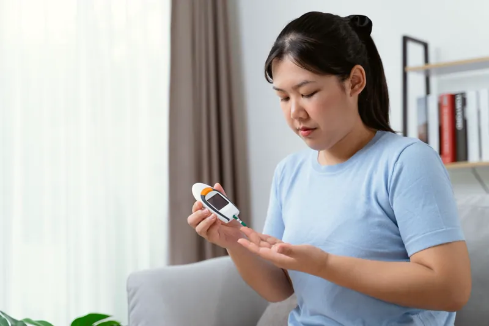
长期在偏高范围，难以回到理想数值。
压力大，浅眠，情绪不稳定。
常常酸痛，却找不到原因。
换季就中招，恢复得比较慢。
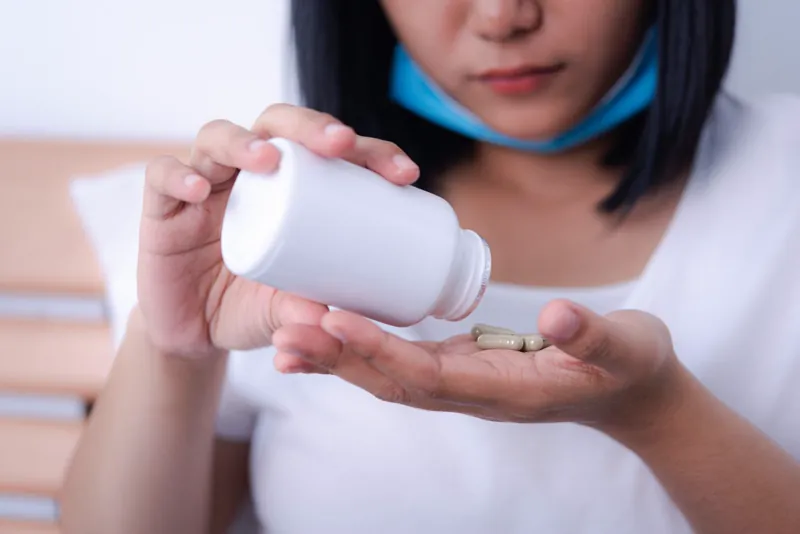
买了很多营养品，却看不到改变。
📌 这些信号常和饮食、压力、睡眠长期失衡有关。如果症状持续或严重，请先看医生。
现代饮食摄取太多 Omega-6（精制油、外食、加工食品），却缺乏 Omega-3（深海鱼）。比例长期失衡，身体就比较容易处于慢性发炎状态，可能出现：
慢性发炎常常没有明显症状，以下是常被提到的情况，你有几个？
膝盖、手指、肩颈常隐隐作痛
运动或劳累后要几天才复原
睡够了还是没精神
小伤口也要很久才好
便秘、腹泻或胃酸反流
湿疹、痘痘、过敏反复出现
焦虑、健忘、脑雾
浅眠，醒来仍然疲惫
慢性发炎不是一夜之间发生的，而是饮食、压力和睡眠失衡长期累积的结果。研究认为它与许多慢性健康问题有关，越早调整生活习惯越好。
市面上的保健品很多，但大部分人吃了几个月，还是不知道到底有没有用。CELLREGEN365 的做法不一样：先检测、再补充、有人跟进、最后用数据对比。你不用再靠感觉猜，每一步都看得见。
在家用指尖采一滴血，寄到独立实验室，分析 11 项脂肪酸。报告会告诉你：
每天 1 汤匙，补充鱼油中的 EPA、DHA，加上橄榄多酚帮助保护油脂不被氧化，再配合饮食调整，慢慢把 Omega 比例拉回平衡。
根据你的需要和生活习惯，搭配 AFC 日本出品的低分子胜肽营养品：
专属顾问帮你解读报告、定期跟进使用情况和生活习惯。120 天后再做一次 BalanceTest，把前后两份报告放在一起对比，用数字确认变化。
点开每一项，看看 CELLREGEN365 怎样陪你一步一步调整。
Omega 平衡 + 日常营养，两方面一起来。
很多人只补一种营养，效果有限。CELLREGEN365 用 BalanceOil+ 补充 Omega-3、调整脂肪酸平衡，再用 AFC 胜肽补充日常所需，从饮食的两个方向一起照顾身体。
前后两份报告，数字会说话。
BalanceTest 由独立实验室分析，开始前测一次，120 天后再测一次。你可以清楚看到 Omega-6:3 比例和 Omega-3 指数的变化，而不是只靠「好像有好一点」的感觉。
支持精神、睡眠与肌肤状态。
每天 1 汤匙平衡油 + 2 包胜肽，3–5 分钟就完成。不用改变整个生活，只要把它变成每天的小习惯，配合作息调整，慢慢找回好状态。
AFC 日本胜肽，配合挪威 Zinzino 平衡油。
AFC 在日本生产，拥有 GMP、JAS 有机认证与多项专利；Zinzino BalanceOil+ 来自北欧，通过 Informed-Choice、Friend of the Sea 等第三方认证。两个品牌的品质，你都能看到证书。
30 天建立习惯，120 天看数据。
不是卖完就算，有人一路跟进。
每个人的身体、饮食和作息都不一样。顾问会根据你的检测报告、生活习惯和目标，建议适合你的产品组合和用量，并定期跟进，遇到问题随时 WhatsApp 询问。
点开了解每一款产品 👇
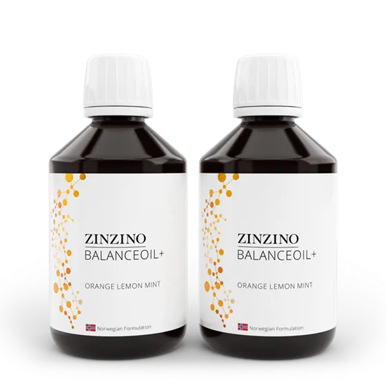
喝的鱼油，一汤匙的份量相当于多颗胶囊。Zinzino 是可以用 BalanceTest 检测吸收效果的鱼油：不是吃了就有效，是吸收了才有效。
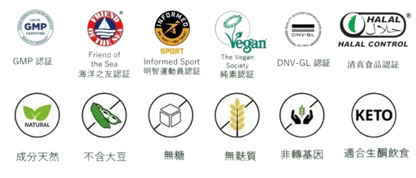
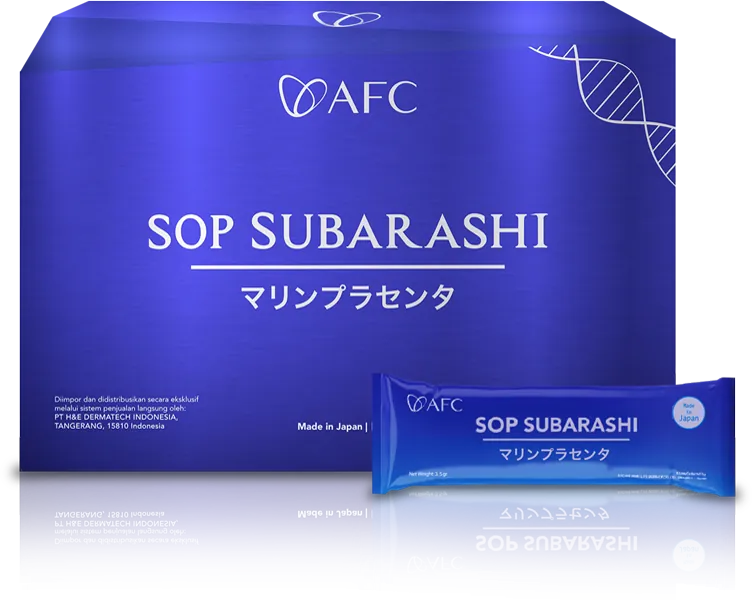
AFC 日本出品，含胎盘素来源的胜肽与低分子配方（约 800 Dalton），容易吸收。
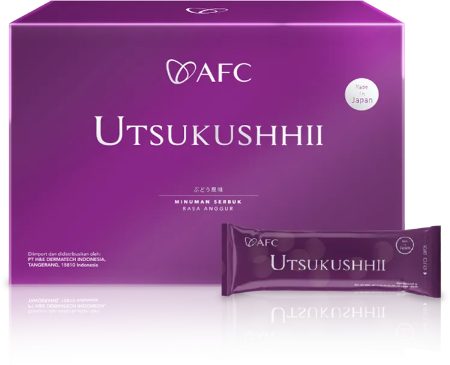
AFC 日本出品的胜肽营养品，适合压力大、作息不规律、常熬夜应酬的人。
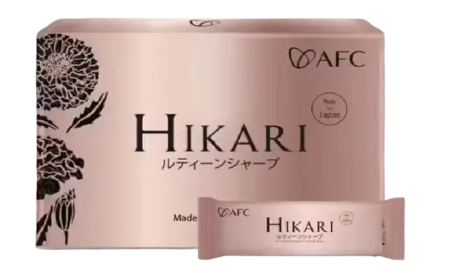
AFC 日本出品，小分子胜肽（约 400 Dalton），含 12 种天然抗氧化成分，例如多酚、植物萃取和维生素。
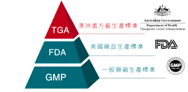
产品生产商拥有日本 GMP、HALAL、JAS 有机认证与多项专利证书。
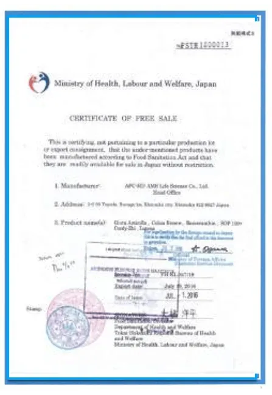
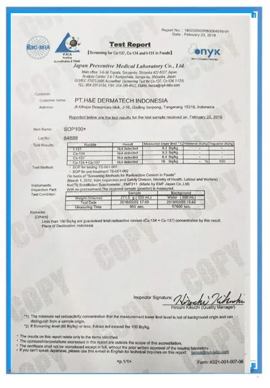
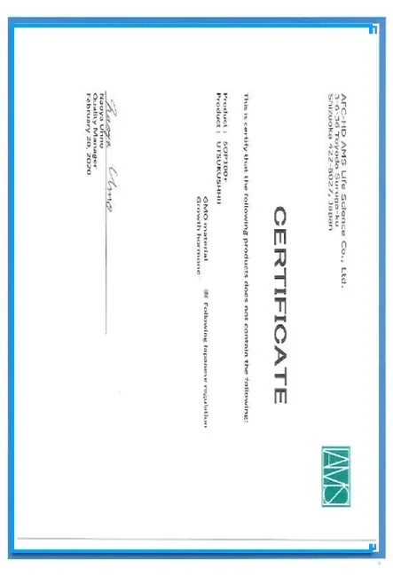
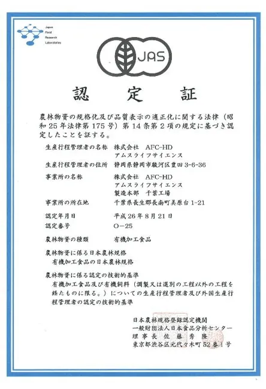
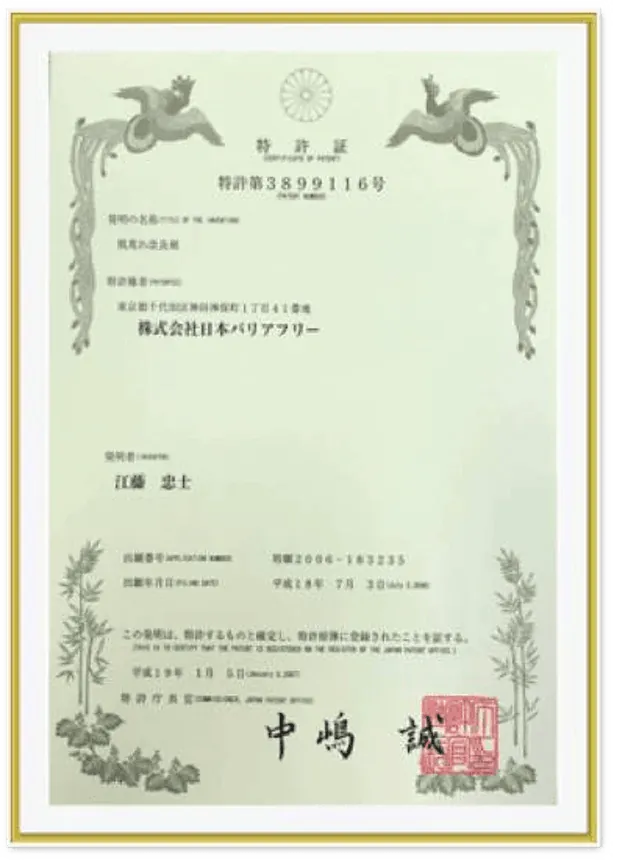
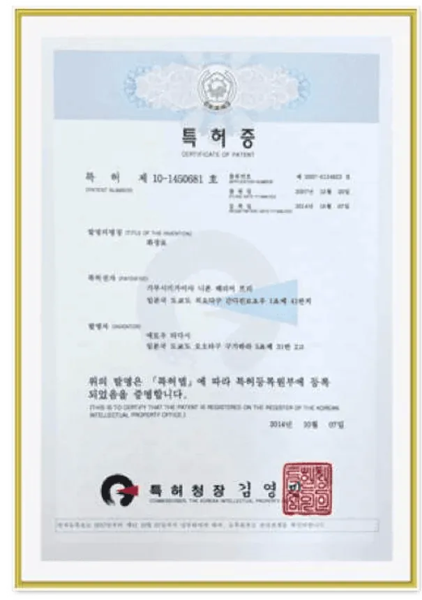
以下为使用者的个人经验分享，每个人的情况不同，效果因人而异。
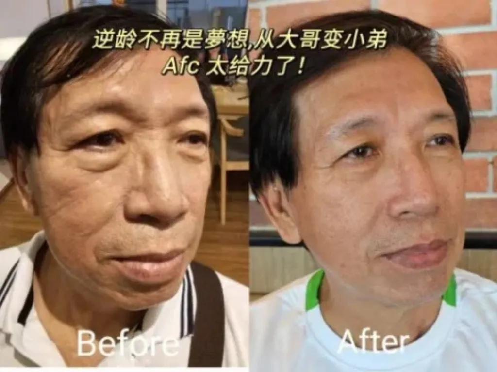
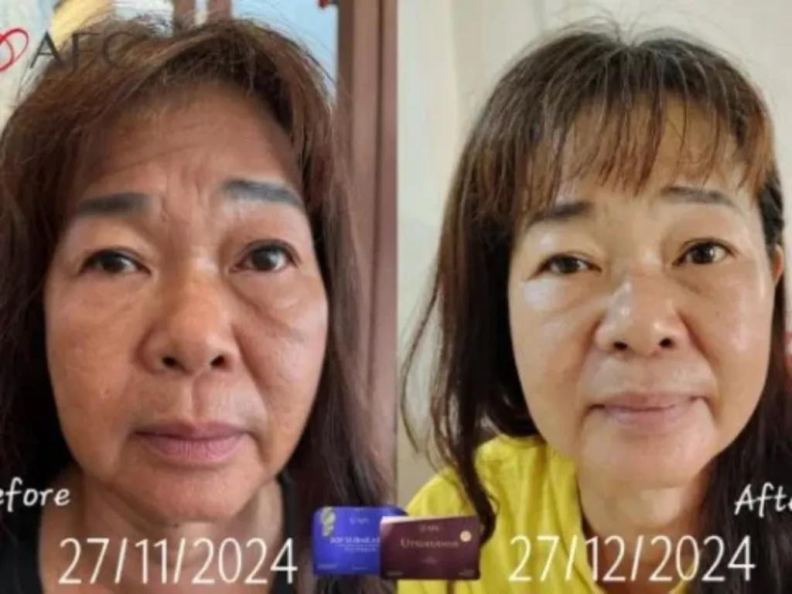
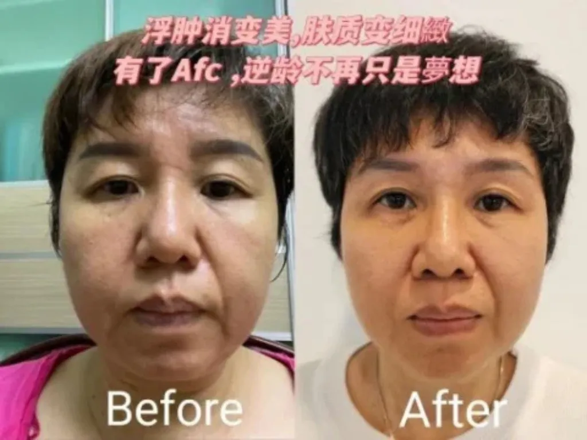
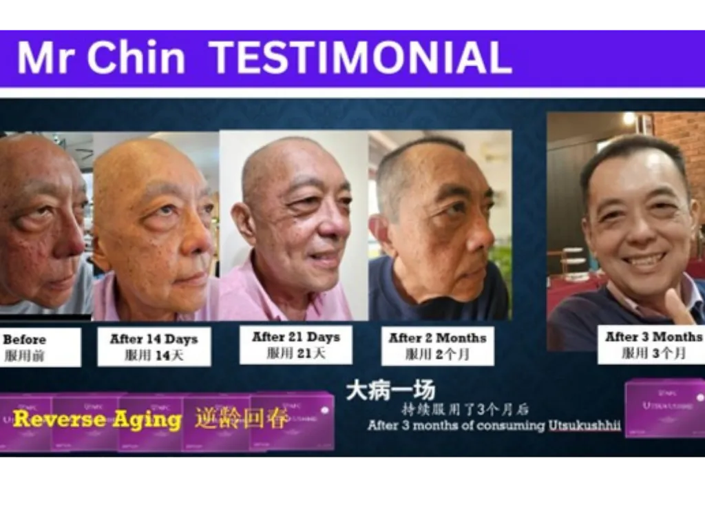
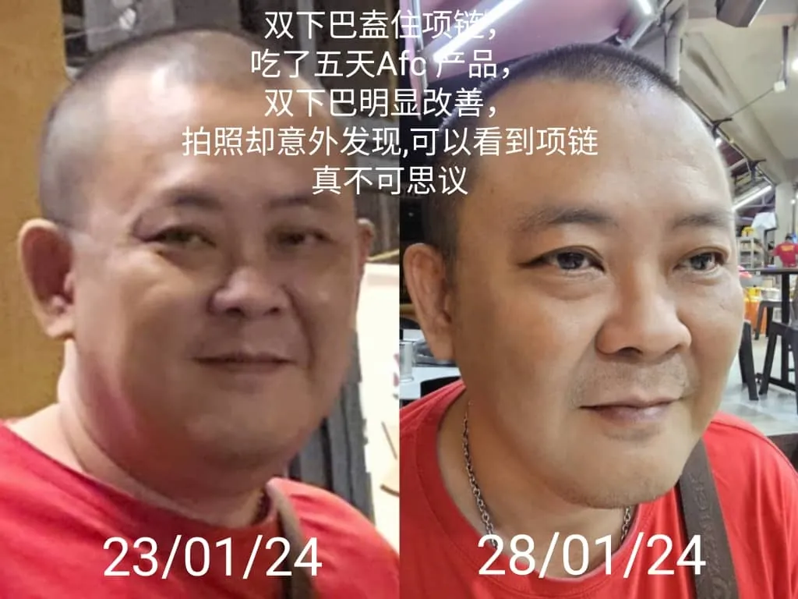
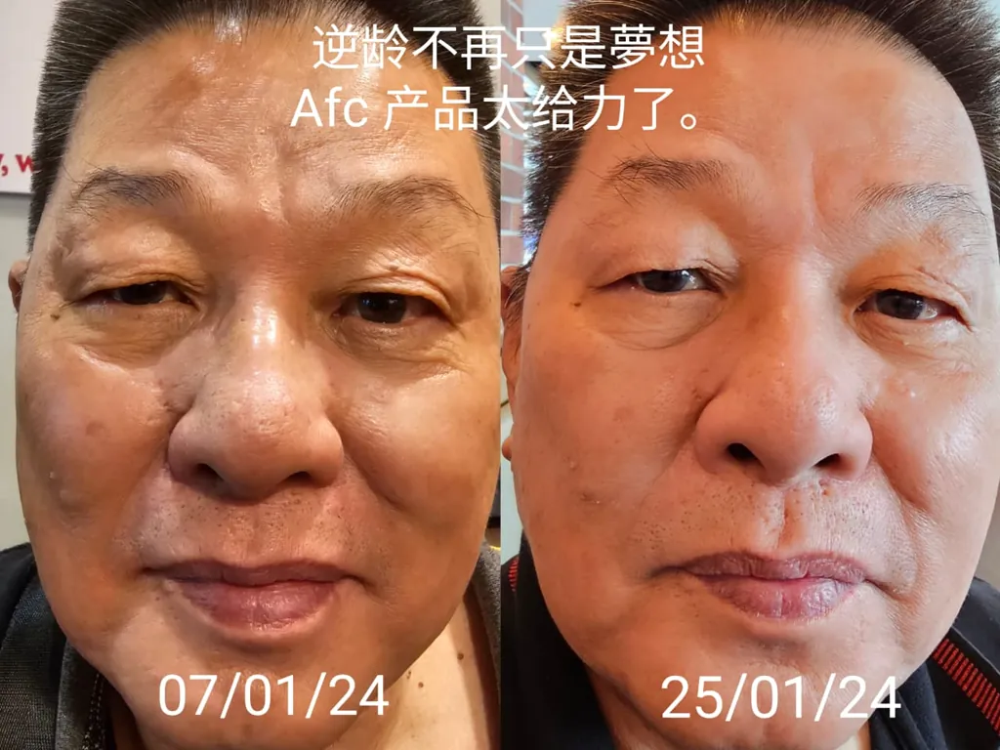
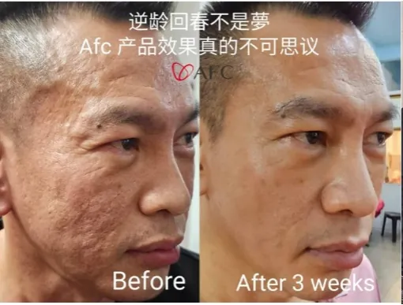
从饮食和营养开始，让身体回到平衡。
补充 Omega-3，减少过多的 Omega-6，让饮食中的脂肪酸更平衡。
胜肽与抗氧化营养素，作为日常保养的一部分。
BalanceTest 前后对比，不盲目补充，而是看数据调整。
📈 30 天建立习惯，120 天检测对比。
🎁 申请 CELLREGEN365™ 体验计划
📦 BalanceTest 检测优惠价 RM300（市值 RM780）+ RM1395 体验组合
💪 每天不到 RM50，给身体一个调整的机会
👉 立即申请 30 天健康计划⚠️ 名额有限，额满即止。价格以顾问报价为准。
30–45 岁 · 脑力劳动 · 加班熬夜
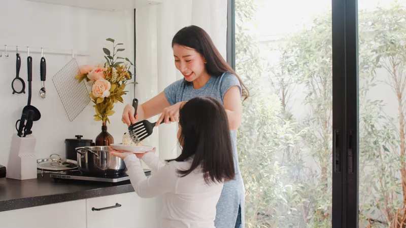
35–55 岁 · 照顾家庭、老人、孩子
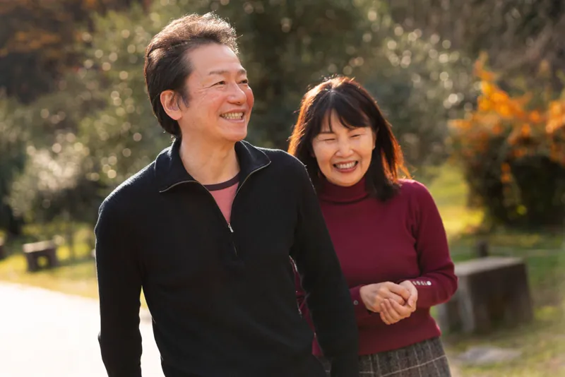
40 岁+ · 想维持血糖、血脂、血压
精神差 · 无精打采 · 白天昏沉
CELLREGEN365 是一套有检测依据的营养计划：先用 BalanceTest 了解你的 Omega-6:3 比例，再配合营养品和顾问追踪，120 天后复测，用数据看变化。
所有产品都是食品级营养补充品，不是药物。生产商拥有 GMP 等品质认证。
如果你正在服药、怀孕或有健康问题，请先咨询医生。
每个人不一样。很多人在头几个星期感觉精神和睡眠有变化；Omega-6:3 比例的改变，建议在 120 天后用 BalanceTest 复测确认。
大多数情况可以，但如果你正在服用抗凝血药物、免疫抑制剂或有重大疾病，请先咨询医生。
BalanceTest 检测优惠价 RM300（市值 RM780），体验组合 RM1395，平均每天不到 RM50。
另外提供体验组试用包（限量）和专属顾问追踪。详情请 WhatsApp 询问。